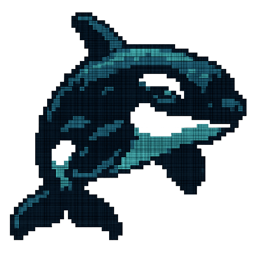

OrKa
 Install via PyPI
Install via PyPI
GitHub ↗
Orchestrator Kit for Agentic Reasoning
Composable cognitive pipelines. YAML-defined. Redis-backed. Transparent AI workflows.
Key Features
- Agent-based architecture: Build modular reasoning systems with pluggable agent types.
- YAML-defined logic: Design transparent, composable cognitive workflows without code.
- Redis streaming memory: Agent interactions are logged, streamable, and replayable.
- Traceable cognition: No black-box calls — every step in the pipeline is inspectable.
- LLM-native: Integrate OpenAI, Ollama, and more as agents or tools within pipelines.